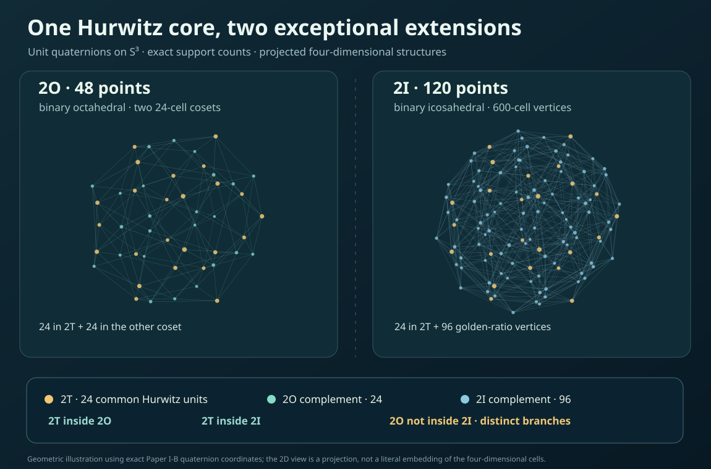
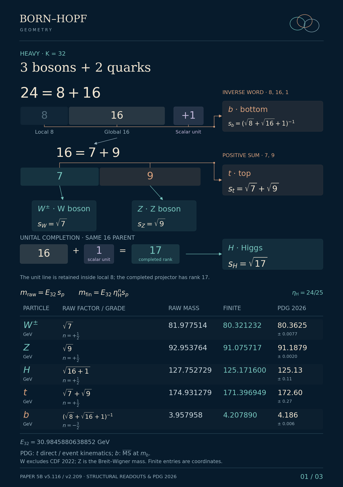
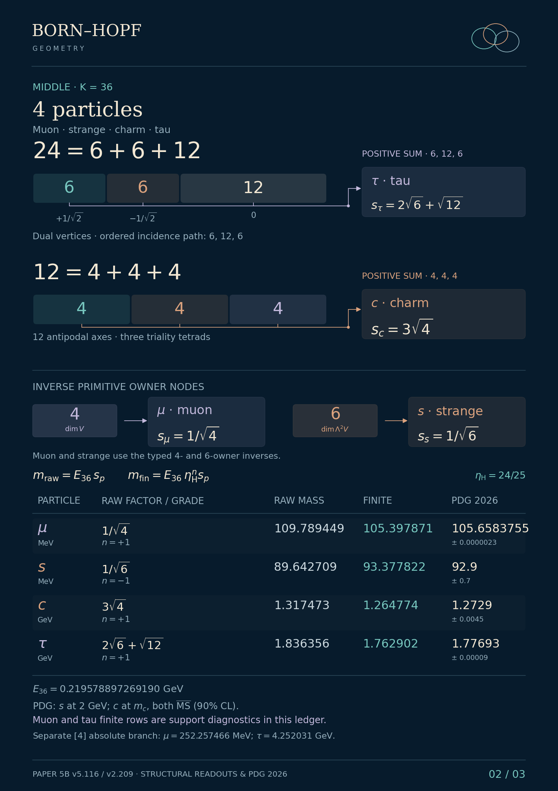
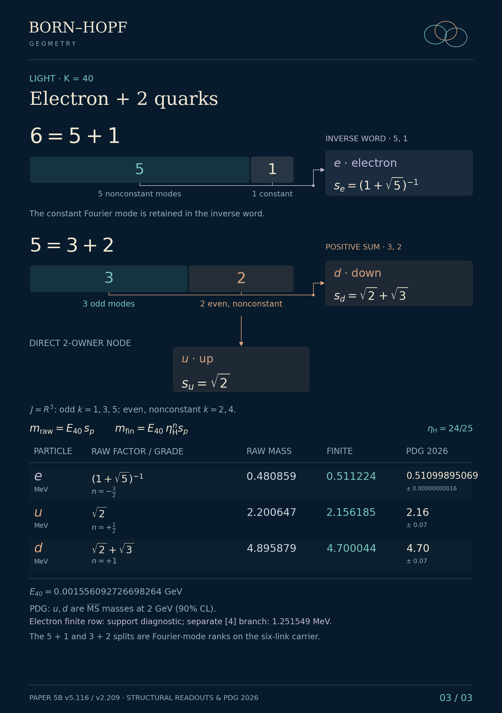

From the Hurwitz 24-cell to particle and hadron geometry
There is a useful way to read Born–Hopf's exceptional geometry: one common finite core, two different extensions, and several differently typed physical questions. The same Hurwitz structure participates in elementary-particle response and in the construction of hadronic sources. That does not mean every vertex is a particle, or that every geometric edge is a decay channel.
The discussion below uses the current PapersMinimal v3.077 sources (especially Papers I-B, III-C, V-B, VII-A and VII-B). The 55 latest source additions are integrated into the papers but have not been independently E3/E4-certified as a block in DAG Atlas v1.223. Source-level theorems and physical occurrence claims are identified separately.
The essential picture: 2T, 2O and 2I

Figure: a two-dimensional projection of exact unit-quaternion vertices and nearest-neighbour incidence. Gold denotes the 24 Hurwitz units common to the displayed embeddings; green denotes the other 24 points of 2O; blue denotes the other 96 points of 2I. The 2I drawing uses the 720 nearest-neighbour edges of the 600-cell. This is a geometry illustration, not a map of physical particle or decay edges.
The binary tetrahedral group 2T contains 24 unit quaternions—the Hurwitz units—and appears as the vertices of the regular 24-cell. The other two exceptional binary groups enlarge this same mathematical support in distinct ways:
| Group | Number of elements | Geometric interpretation | Role discussed here |
|---|---|---|---|
| 2T | 24 | Hurwitz units; regular 24-cell | Shared core and color/particle split grammar |
| 2O | 48 | Two 24-cell cosets; F₄ root configuration | Working elementary-particle response carrier |
| 2I | 120 | Vertices of the regular 600-cell; H₄ root configuration | Icosahedral mobility, multi-core comparisons, possible hadronic source geometry |
The exact inclusions are 2T ⊂ 2O and 2T ⊂ 2I. Crucially, 2O is not a subgroup of 2I. The connection is a fork over the shared Hurwitz core, not a nesting of all three groups into one another. The 2I index-five cosets of 2T, its five conjugate tetrahedral cores, and the five related normalizers are also distinct constructions; equal counts do not identify their roles.
Primary geometry: Paper I-B: Exceptional Geometry · Paper III-C: Protected Hierarchy · S³ source diagrams.
Why 2O is interesting for elementary particles
The current Paper V-B makes a particularly explicit working assignment: use the complete 2O normalizer of the local 2T Hurwitz core as the elementary-particle response carrier. Its finite support has the split
48 = (8 + 16) + (6 + 12 + 6).
The first 24 = 8 + 16 is the original Hurwitz core, with the established E₃₂ anchor. The complementary 24 = 6 + 12 + 6 is an octahedral normalizer sector associated with the E₃₆ response. An attached sixfold axis C₆ and its paired normalizer support feed the already constituted E₄₀ Clifford carrier. E₃₆ is a balanced transition weight, with E₃₆² = E₃₂ E₄₀. It is not a new active particle energy eigenvalue, nor does 48 mean 48 elementary particles.
This is a sharper statement than saying that the octahedron merely “resembles” a particle classification. It ties the response assignment to finite operators and to the retained heavy/light anchors. But the paper explicitly calls the identification of physical elementary-particle response with all of 2O a working realization: it still needs a licensed physical source-occurrence certificate under G0, not just the exact group normalizer.
Paper anchors: p5b:def:v5200-full-octahedral-particle-role, p5b:rem:v5200-full-octahedral-physical-gate in V-B.
Where the three Hurwitz split families fit
The heavy, middle and light particle formulas do not use interchangeable partitions. Each uses a different typed operator—a positive sum, inverse support magnitude, or completed projector—on a declared geometric support. The numbers are not a free list of fitted square roots.
Heavy sector: E₃₂, the 8 + 16 split
The 24-cell supplies 24 = 8 + 16. The 16-sector contains the 7 + 9 refinement used in the heavy W/Z/top grammar, while the Higgs column uses the retained rank-one completion 16 + 1 = 17. The bottom's inverse support word uses 8, 16, and the scalar unit 1. The rank-one addition is on the existing carrier—not a newly added 25th geometric vertex.

Middle sector: alternative Hurwitz incidence
A different face/incidence decomposition of the same Hurwitz support is 24 = 6 + 6 + 12, with 12 = 4 + 4 + 4 triality. The middle-family operator words for muon, strange, charm and tau are built from those owned supports. This partition is an alternative supported geometric reading, not a claim that the 8+16 partition has disappeared.

Light sector: the sixfold attachment
The retained sixfold construction provides 6 = 5 + 1 and 5 = 3 + 2, supporting the electron, down and up operator grammar. This is where the C₆ interface makes the connection to the E₄₀ anchor concrete. In the current full-2O picture it is inside the same 48-element response support, not a separate additional carrier.

The three illustrations come from the supplied X Posts v1.12 visual archive. They show the original operator and raw/finite comparison ledgers. Nearness to a measured mass is not, by itself, a derived physical pole or rest-mass prediction. Paper V-B distinguishes diagnostic coordinates, retained absolute branches, and physical normalization/scale requirements.
Operator source: Paper V-B: Terminal Spectrum · Paper V-A: Finite Matter.
Why 2I matters for hadrons
2I supplies the 120-element icosahedral structure of the 600-cell, with a common 2T core and a larger five-core geometric organization. This supports exact icosahedral comparisons, Petersen-edge geometry, and additional sources built on the pre-existing Hurwitz data. It does not turn the 120 vertices into 120 physical hadrons.
The color carrier is already the SU(3) triplet C. Its color-singlet tensors supply the basic hadron types:
- Mesons: the singlet in C ⊗ C*, a quark–antiquark color pairing.
- Baryons: the antisymmetric singlet ∧³C, a three-quark color contraction.
- Glueballs, hybrids and multiquark states: higher color-singlet tensor constructions on the same inherited carrier.
The useful role of 2I is geometric organization and possible source/transition visibility, not the invention of new color charges. In particular, the oriented 15-edge Petersen comparison space is not the original 24-cell link complex or the 15-dimensional momentum representation bank; they only happen to share an integer count.

Figure: original S³ Structure Network v1.49 diagram. The arrows record exact or stated geometric maps; they do not independently assert physical QCD transitions.
For 2I's five three-dimensional core sectors, Paper VII-B derives a 15-dimensional mirror-contrast operator. A single isolated core has zero internal contrast; a coherent two-core support can have nonzero contrast, with extreme magnitude √15/10 in its declared normalization. That is a nontrivial geometric visibility result. It is not a meson mass, baryon mass, or branching fraction.
Sources: Paper I-B · Paper VII-A · Paper VII-B.
The new hadron construction: three faces around one Hurwitz edge
The latest Paper VII-A contains a concrete finite baryon-source result. The Hurwitz 24-cell has 96 edges and 96 triangular faces. Every edge belongs to a special three-face fan: exactly three distinct triangular faces provide the minimal compatible ℤ₃ center-triality cancellation around that edge. The uniqueness statement is made in the native cellular chain complex; it is not a visual guess.
On a specified homogeneous SU(3) product-heat reference measure, the baryon edge determinant has the asymptotic expectation
⟨Wₑ⟩ = e⁻²ᵗ + O(e⁻⁸ᵗ⁄³) as t → ∞.
This is an exact leading reference-model result with coefficient one, not a freely assigned channel weight. The same source construction gives a locally Gauss-compatible, normalized finite baryon source. But the reference heat state is not thereby the interacting QCD vacuum, and the expectation is not a decay width.
An important downstream result is even more restrictive: after canonical source-Gram normalization, the primitive scalar overlap cancels from the bare axial current. Therefore the shared 2T/2I geometry alone cannot be used as a new multiplier that arbitrarily strengthens or weakens one physical decay channel. Any channel-dependent effect must come from the same-action dressed current, source evolution, source-to-complement coupling, and physical pole residues.
Current source trail: p10:thm:v378-unique-baryon-triality-membrane, p10:thm:v378-full-heat-baryon-leading, p10:prop:v378-root-gram-current-cancellation in VII-A. Corresponding readouts and conditions are in VII-B.
How does a finite geometric channel become a measured decay?
The latest strong-sector papers go beyond listing possible channels. They give exact two-energy Schur/resolvent expressions and finite mixed-current moments that can, once their source and Hamiltonian are fixed, determine matrix elements without inserting arbitrary per-channel weights. The finite symmetry analysis also identifies an octet–decuplet axial tensor structure, with a relative primitive source-strength pattern 8:3:2:2 on its stated symmetric domain.
Yet the distinction matters: source-strength ratios are not partial-width ratios. Physical decay widths depend on the actual action-selected parent/daughter poles, correctly normalized current, accessible final states and phase space, and an outgoing or absorptive dynamical limit. The most recent source-integration update leaves those physical commitments open rather than claiming a complete hadron lifetime theory.
The proposed connection is therefore testable and precise:
common 2T geometry → typed 2O particle response and 2I hadron incidence → single source-dependent QCD action → hadron poles and dressed currents → observable transition rates.
Only the earlier geometric and conditional finite-operator arrows are established in the cited papers; the complete physical chain is not yet closed.
Continue: Paper VII-A, finite strong kernel · Paper VII-B, hadronic observables · Search current source labels · Verification status.